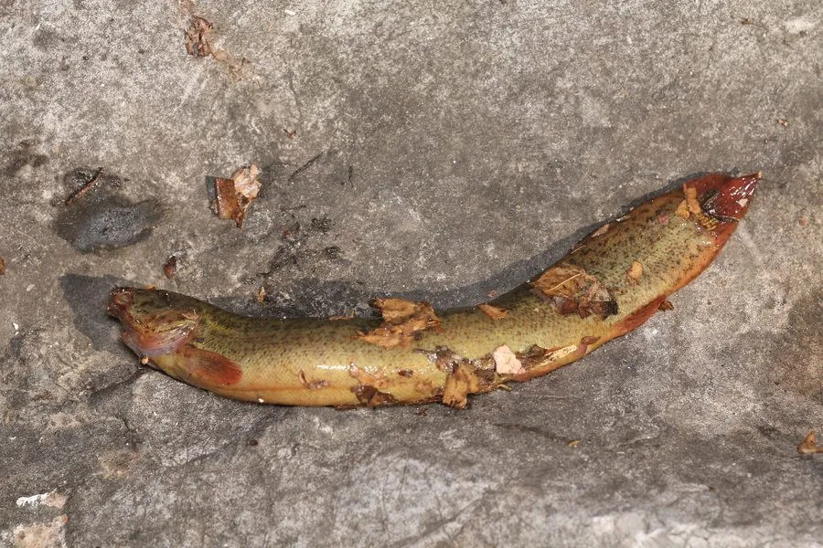

鱼类 · 动物界
大鳞副泥鳅 Paramisgurnus dabryanus

中国常见的底栖小型鱼类，体表黏液丰富、鳞片细小，能用肠道辅助呼吸，耐低氧、善钻泥，是稻田和池塘中的常见物种。
- 分类
- 门脊索动物门纲硬骨鱼纲目鲤形目科鳅科属副泥鳅属
- 栖息环境
- 池塘、稻田、沟渠、沼泽与淤泥底质的缓流水体，喜钻泥潜伏
- 地理分布
- 中国长江流域及以北地区，以及朝鲜半岛和日本
- 保护级别
- IUCN 暂无评估
物种志
大鳞副泥鳅体长 15–25 cm，体重 30–80 g。身体细长，前部圆筒形，后部侧扁，头小，口下位，触须 5 对；体表黏液丰富，鳞片极细小，体色灰褐或黄褐，背部和体侧布满不规则黑褐色斑点，尾鳍圆形。
它们分布于中国长江流域及以北的池塘、稻田、沟渠与淤泥底质的水体中，也见于朝鲜半岛和日本。大鳞副泥鳅喜在泥底钻洞，白天潜伏，夜间出来觅食，食物包括底栖动物、有机碎屑、藻类和水生昆虫幼虫。它们能用肠道辅助呼吸，直接吞入空气，因此能在低氧的静水中生存，离水后也能存活一段时间。繁殖期在 4–6 月，雌鱼产卵于水草或泥底，卵具黏性。它们适应力强，是稻田养殖和垂钓的常见对象。
形态与习性
- 食性底栖动物、有机碎屑、藻类和水生昆虫幼虫
- 体长15–25 cm
- 体重30–80 g
- 繁殖4–6 月产卵，卵具黏性
- 呼吸可用肠道辅助呼吸，耐低氧
- 习性夜行性，善钻泥，白天潜伏
趣味知识
- 它能直接吞入空气，用肠道辅助呼吸，因此能在低氧的池塘中生活。
- 大鳞副泥鳅体表的黏液既能减少摩擦，也能在离水时防止身体干燥。
- 它嘴边的 5 对触须非常灵敏，可以在浑浊的泥水中寻找食物。